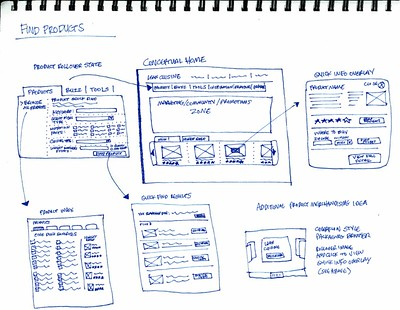
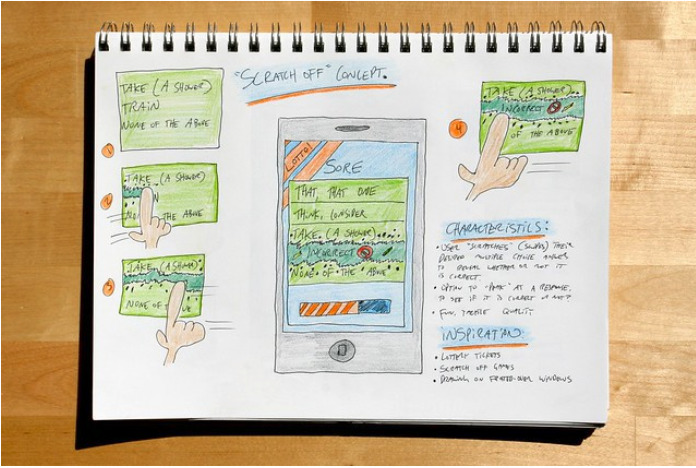
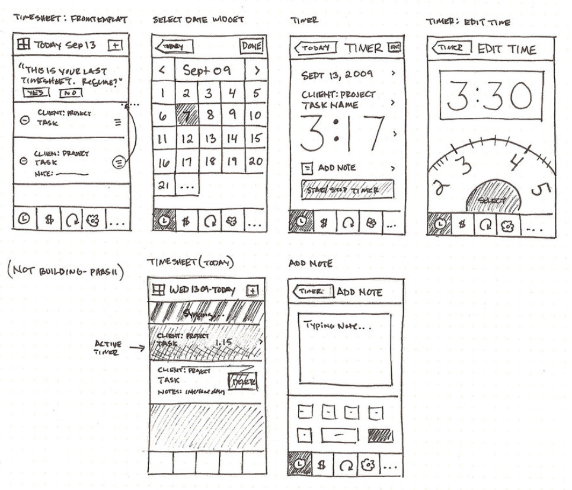

Week 4 - Designing for Screens
Date: 2025-02-12
Overview
- review MTA Metrocard screen
- practice flexbox
- working with fonts
- responsive design
- iterative design
- user-centered design
- wireframing + prototyping
- paper prototyping
Metrocard UI
Flexbox
Flexbox layout is a relatively recent (as of 2017) addition to CSS providing an efficient, intuitive model to arrange, space out and align a series of html assets within a container.
The way this works is that you define a container, a parent box object that your items (usually images or other html items like divs) will sit inside. You define how those items should take up the full space of the container. The items expands to take up the full space of the container.
This isn’t the only way to lay out assets on a webpage or web app. It is ideal for small screen web applications. For larger layouts the CSS grid system is recommended.

Flexbox container, source: CSS-Tricks
Flexbox - code snippets
.container {
/* this is a comment in css */
/* you assign the parent container using display: flex */
display: flex;
/* optional: define flex-direction as row, column, etc */
flex-direction: row; /* default, if undefined */
/* optional: flex-wrap defines whether items fit on a single line or wrap */
flex-wrap: wrap; /* default is nowrap */
}Justifying content
Justifying content is often used with Flexbox. It allows you to define how items spread out and take up space inside the container. You define this on the parent container.

Justify-content in Flexbox, source: CSS-Tricks
.container {
justify-content: space-evenly;
/* other options:
flex-start (default), aligns to left
flex-end, aligns to right
center, aligns to center
space-between
space-around
space-evenly
*/
}Flexbox links

Flexbox items aka children, source: CSS-Tricks
.child-item {
/* flex-grow defines how much space an item takes up, optional */
flex-grow: 2; /* this will be twice the width of other items (or height if a column) */
}
- demos of flex-wrap
Working with Fonts
Two slightly different methods:
- Google Fonts
- Importing custom fonts
Google Fonts
In this method, you visit the Google Fonts website. Select a font. Click Select this style. From the new that opens in the interface, copy the code into thesection of your html page. Make sure you place it before your own stylesheet.
Then, back to the Google Fonts page, copy the line from the CSS rules box. It will look like this:
font-family: 'Akaya Telivigala', cursive;Go to your own stylesheet and paste it in the selector for the element you want to change. For example, if you want all text to use that font, then you can place it in the body section on your CSS stylesheet.
Importing Custom Fonts
Find a font that you like online. There are tens of thousands you can use for free (check the license listed) at DaFont.com. Download the font to your computer.
In your Glitch.com project, open the assets folder and import the font you just downloaded a moment ago. When it finishes importing, click on it and copy the URL.
Go to your stylesheet and add a font section at the top and add a name for the font (you can decide). For example:
@font-face {
font-family: niceFont;
src: url(<PASTE THE URL FROM THE ASSETS FOLDER HERE>
}Don’t put spaces in the font name.
If you are not using Glitch and instead your own webserver
and editing with Atom or SublimeText or Visual Studio Code you can
put your font in an assets folder and then the second line above
would change to:
src: url(assets/<font-file-name.ttf>;
Now you can use that font in a section on your stylesheet. For example, if you want all paragraphs to use that font:
p {
font-family: niceFont;
}This is the same line of text as above, but now it will apply that font to your paragraph text. If you want to change the font for your entire website, you can place this in body instead of p.
More info on fonts
- Google fonts on w3schools
- @font-face and custom fonts on w3schools
Design Principles
- Learnability
- Visibility
- Efficiency
- Error prevention / error handling
- User control
Efficiency
When designing an interface, consider your defaults. Defaults are common answers. Consider how you may want to indicate these defaults to your users.
Anticipation
Anticipation is the concept that good design presents all information at once. It considers a common workflow, and minimizes having to move back and forth within this workflow.
Users don’t like having to move back and forth within navigation. Consider our pizza calculator apps as an example.
Usability through Iterative Design
User-centered design - iterative design is considered best practice for user-centered design - what does iterative mean? - considered best practice for usability
What does iterative design look like?
It’s a circular process
- Create an initial interface design
- Implement
- Evaluate
Go back to design and begin again…
This is in contrast to an earlier design process called Waterfall.

Waterfall model of software design, source: Wikipedia
{kind=link}
The limitations of this model:
- User interface is difficult to predict and we’re likely to get it wrong
- Users aren’t involved in testing until near the end
- UI mistakes cause changes in requirements and design
Iterative design process
- Create initial interface design
- Have users test it
- Note problems
- Refine interface
- Have users test it
- Refine interface
- Have users test it
- Repeat until interface issues solved
The spiral model
This is a modification of the iterative process. We describe the earliest interfaces as cheap - minimal fast prototypes.
It’s possible to make multiple alternatives to consider and test. Remember David Reinfurt’s alternative UI prototypes for the Metrocard machine.
Start with a paper/pencil sketch! Earliest interfaces should be considered throw-away.
Later iterative designs should be more detailed. THE UI should become clearer.
The more iterations the better your UI. Have every prototype get evaluated by users!
Also consider Simulation (The “Wizard of Oz” approach).
Prototyping
- Cheap, throw-away UI tests
- Cheapest:
- paper / pencil prototypes
- “Wizard of Oz” simulation
- Medium:
- HTML
- GUI implementation:
- native vs web GUI
Paper prototyping - Wireframing

source

source

source
Units of measurement
There are 5+ ways to specify sizes in CSS!
They are: px, em, rem,
% and viewport units.
em - Relative to the font-size of the element (2em means 2 times the size of the current font)
rem - Relative to font-size of the root element
% - Relative to the parent element
vw - Relative to 1% of the width of the viewport
vh - Relative to 1% of the height of the viewport
vmin - Relative to 1% of viewport’s smaller dimension
div {
width: 200px;
font-size: 2em;
}
p {
font-size: 3rem;
}
img {
width: 50%;
}
.container {
width: 80vw;
height: auto;
margin: 10vmin;
}More info on CSS units on w3schools
Responsive design
What is it?
Design should respond to the user’s behavior and environment. This could be based on screen size, orientation (vertical or horizontal), and platform (Mac, Windows, iOS, Android, Linux, etc).
- How do you do it?
``
- consider your viewport width
- use flexbox (or CSS grid) to make sizing flexible
- pay attention to font sizes (small size on small screen = hard to read)
- use media queries (aka set breakpoints) to resize things for small screens
Step 1: Set the viewport width.
Place this somewhere in thesection:
<meta name="viewport" content="width=device-width, initial-scale=1.0"> Step 2: Use flexbox to make sizing / placement flexible
Covered earlier in class. See Flexbox notes.
Step 3: Consider font sizes. Use different sizing that may be more flexible for your needs. Examples include viewport units.
If the CSS width property is set to 100% of the viewport, the image will be responsive and scale up and down:
A better solution, in many cases, will be to use the max-width property instead so that it is not larger than the screen.
Step 4: Media Queries
In the example below, if the user’s screen is less than 800 pixels then the container class (which has been set previously as a flexbox with default settings) will have the flex-direction be changed to column view. This is a good approach when you want to change from a horizontal sequence of divs to a vertical orientation on a phone.
/* Use a media query to add a breakpoint at 800px: */
@media screen and (max-width: 800px) {
.container {
flex-direction: column;
}
}Resources
Additional resources: - basic overview of responsive design in html/css on W3Schools - Responsive Web Design: 50 Examples and Best Practices
Homework
Read about Responsive Design in Smashing Magazine.
Make a copy of last week’s homework and now alter it. Make it responsive using CSS. You can choose for example the breakpoints (at what pixel size does it switch to a vertical orientation for example). The goal is to make a useable interface that will resize and look good for phones, tablets and desktop.
source: User-Centered Design is adapted from MIT Open Courseware 6.831 User-Centered Design